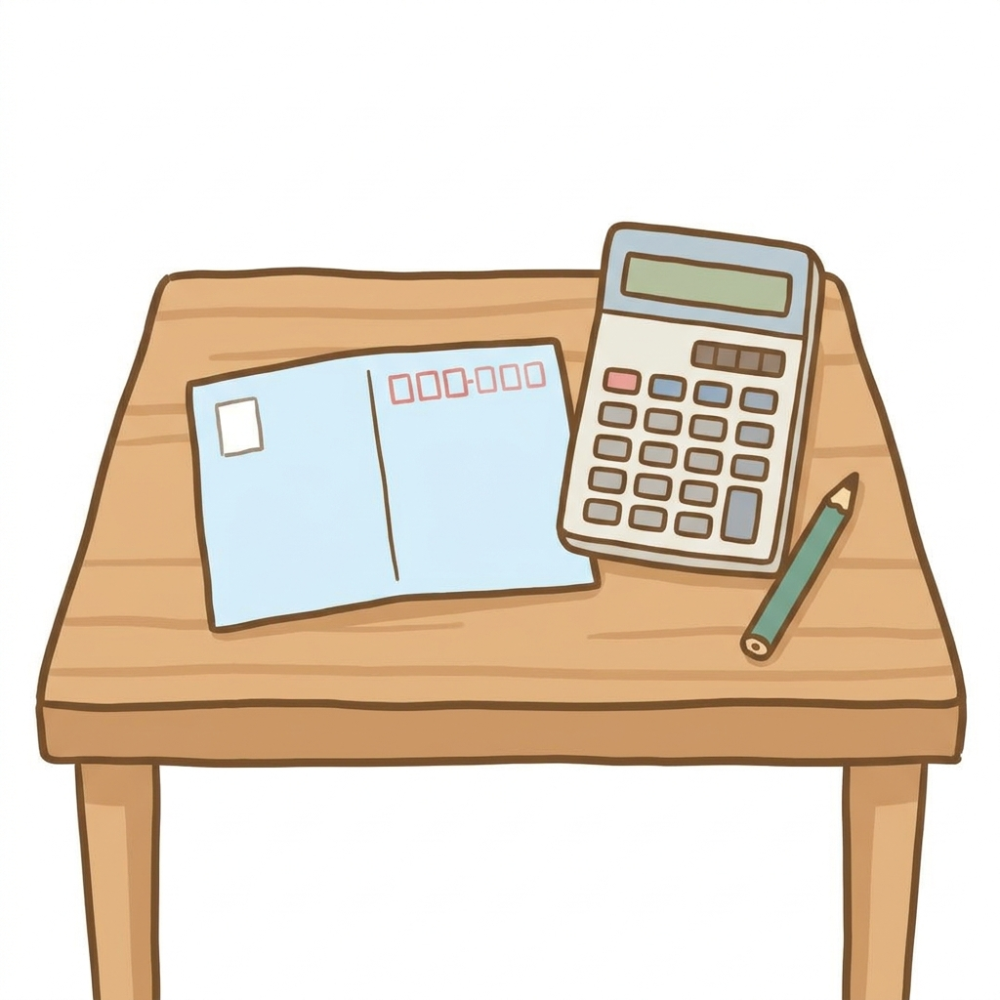

🎁 遺族年金ざっくり計算シート（書き込み式）＋手続き3つのチェック表
よく来たな。約束の物を渡す。
動画の「2階×4分の3＋自分の年金」を、書き込むだけで“わが家の目安”が出る紙1枚にした。
ねんきん定期便（または6月の振込通知書）を1枚だけ手元に置いて、上から埋めてほしい。
✎ 遺族年金ざっくり計算シート（書き込み式）

まず、夫（先に旅立つと想定する側）の「老齢厚生年金（報酬比例部分）」の行を探す。
それが動画で言った「2階部分」だ。
✎ A. 夫の2階部分（老齢厚生年金・報酬比例部分の額） ＝ 月 ＿＿＿＿＿＿ 円
✎ B. 遺族年金の目安 ＝ A × 3/4（Aに0.75を掛ける） ＝ 月 ＿＿＿＿＿＿ 円
✎ C. 妻自身の年金（基礎＋自分の厚生年金） ＝ 月 ＿＿＿＿＿＿ 円
✎ D. ひとりになった後の年金の目安 ＝ B ＋ C ＝ 月 ＿＿＿＿＿＿ 円
物差し：Dは「ふたりの合計」の6割前後に落ち着く家庭が多い（夫=会社勤め・妻=専業の型）。
ひとり暮らしのシニアの平均支出は月15万ほど（総務省・家計調査2025）。
Dが15万を下回るなら、その差が「今から備える金額」だ。
⚠️ 共働きだった妻（自分にも厚生年金の2階がある人）は、Bがそのまま乗らない（動画の継ぎ足し方式）。
その場合は下の式で出す：
✎ E. 夫の2階÷2 ＋ 妻の2階÷2 ＝ 月 ＿＿＿＿＿＿ 円
✎ D'. ひとりになった後の目安 ＝「BとEの大きいほう」＋ 妻の基礎年金 ＝ 月 ＿＿＿＿＿＿ 円
（遺族年金の欄が小さく出ても損ではない＝自分の年金が先に出ているだけ。合計D'で見ること）
⚠️ ご主人がずっと自営業（厚生年金なし）の家は、この年金の対象外＝別の備えが必要。
⚠️ 夫が繰下げで増やした分は、遺族年金の計算には乗らない（元の額で計算される）。
⚠️ ここで出るのはあくまで目安。正確な見込額は、ねんきんダイヤルで教えてもらえる（下の台本を使う）。
✅ 「その日」の手続き3つ——チェック表
□ ① 年金を止める（死亡の届け）
マイナンバーが年金機構に登録済みなら原則不要（多くの人は済んでいる）。
不安なら電話で「死亡の届けは必要ですか」と聞けばよい。
□ ② 「最後の月まで」の年金を受け取る（未支給年金）
年金は2ヶ月に1回の後払い。だから亡くなった月の分まで、家族が請求して受け取れる。
一緒に暮らしていた家族が対象。これは知らないと丸ごと置き忘れる。
□ ③ 遺族厚生年金を請求する（年金事務所・予約制）
申請しないと1円も出ない。さかのぼれるのは5年分まで＝それより前は時効で消える。
合言葉は動画のとおり――「落ち着いたら、まず年金」（四十九日が済んだら年金、でもよい）。
📞 電話ひとこと台本
かける前に基礎年金番号（年金手帳・ねんきん定期便に記載）を手元に。
| 確かめたいこと | かける先 | 最初のひとこと |
|---|---|---|
| 遺族年金の見込額 | ねんきんダイヤル 0570-05-1165 | 「遺族年金の見込みを知りたいです」 |
| 手続きの相談・請求 | 年金事務所の予約 0570-05-4890 | 「遺族年金の相談で、予約をお願いします」 |
⚠️ 0570は通話料がかかる。受付時間＝ねんきんダイヤル：月8:30-19:00／火〜金8:30-17:15／第2土曜9:30-16:00。
🍂 動画では話していないおまけ——「遺族年金の給付金」
遺族年金にも、年金生活者支援給付金（月5,620円・2026年度）の遺族版がある。
対象は遺族基礎年金を受けている人（＝主に18歳の年度末までの子がいる遺族）で、
前年所得が一定以下の場合。シニア夫婦の死別では対象外のことが多いが、
お子さん・お孫さん世代に万一があった時のために、名前だけ覚えておいてほしい。これも申請制だ。
さらに動画の通り、遺族年金は「収入」の計算に入らない——だから
住民税非課税向けの給付金や、医療・介護の軽減と両立できる家庭が多い。
「うちは対象か？」もねんきんダイヤルのついでに聞いてしまうのが早い。
数字は2026年度（令和8年度）の額と平均の目安。受給の可否・金額は加入記録・家族構成で異なる。
正確な金額は日本年金機構（ねんきんダイヤル・年金事務所）で確認してほしい。